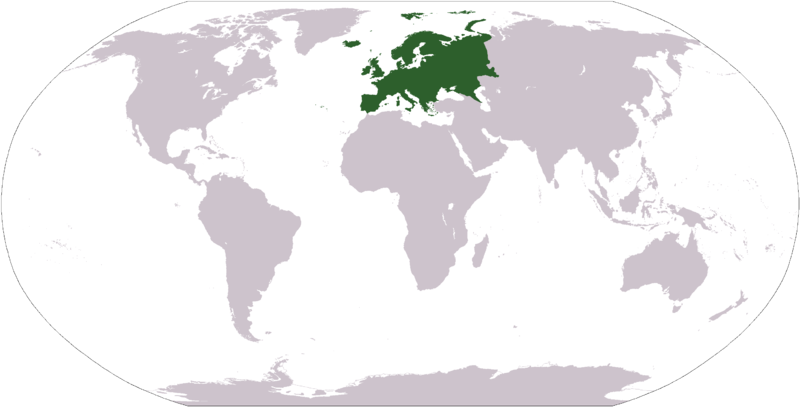
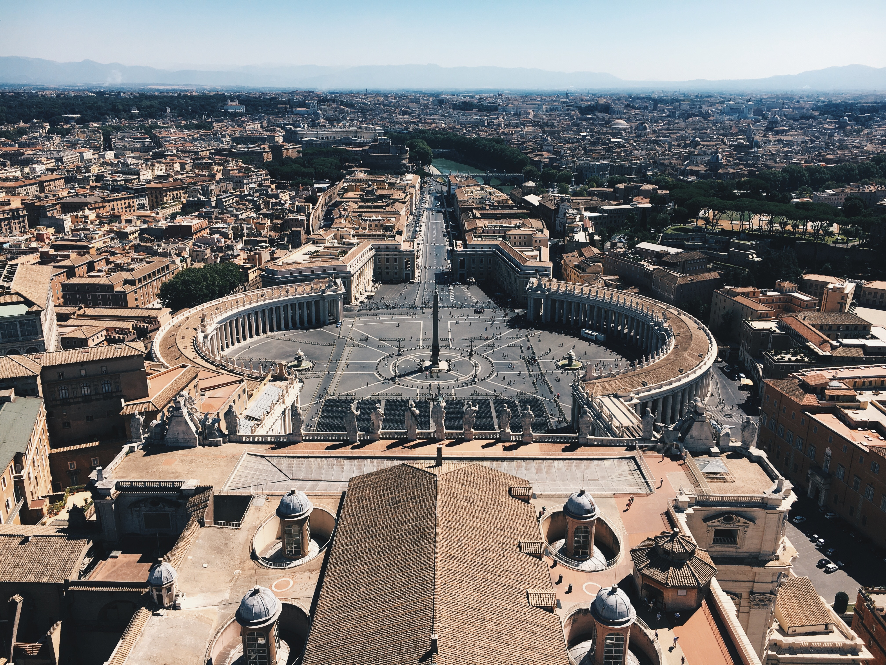
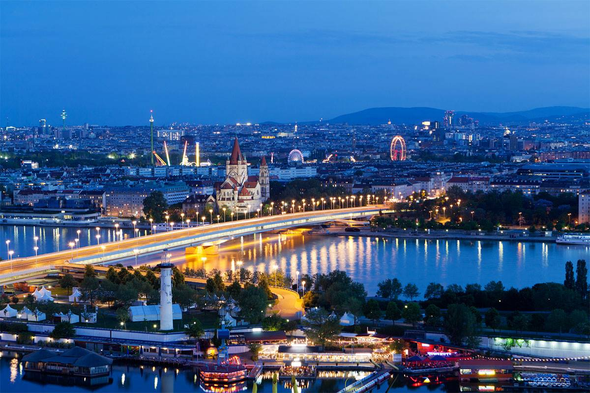

Europe
Europe is a continent located entirely in the Northern Hemisphere and mostly in the Eastern Hemisphere. It is bordered by the Arctic Ocean to the north, the Atlantic Ocean to the west, Asia to the east, and the Mediterranean Sea to the south. It comprises the westernmost part of Eurasia. It is the 6th largest continent in the world.
London
London is the capital and largest city of England and the United Kingdom. Standing on the River Thames in the south-east of England, at the head of its 50-mile (80 km) estuary leading to the North Sea, London has been a major settlement for two millennia. It is considered to be one of the world's most important global cities and has been termed the world's most powerful, most desirable,[21] most influential, most visited, most expensive, innovative, sustainable, most investment friendly, and most popular for work city in the world.

Madrid
Madrid is the capital and most populous city of Spain. The city has almost 3.3 million inhabitants and a metropolitan area population of approximately 6.5 million. It is the third-largest city in the European Union (EU), surpassed only by London and Berlin, and its monocentric metropolitan area is the third-largest in the EU, smaller only than those of London and Paris. Madrid has an inland Mediterranean climate in the western half of the city transitioning to a semi-arid climate in the eastern half.

Paris
Paris is the capital and most populous city of France, with a population of 2,140,526 residents in an area of 105 square kilometres. Since the 17th century, Paris has been one of Europe's major centres of finance, diplomacy, commerce, fashion, science and the arts.

Rome
Rome is the capital city and a special comune of Italy (named Comune di Roma Capitale). Rome also serves as the capital of the Lazio region. With 2,872,800 residents in 1,285 km2 ,it is also the country's most populated comune. It is the fourth most populous city in the European Union by population within city limits. It has a Mediterranean climate: hot, dry summers and mild, humid winters.
Vienna
Vienna is the national capital, largest city, and one of nine states of Austria. Vienna is Austria's primary city, with a population of about 1.9 million(2.6 million within the metropolitan area, nearly one third of the country's population), and its cultural, economic, and political centre. It is the 7th-largest city by population within city limits in the European Union.
